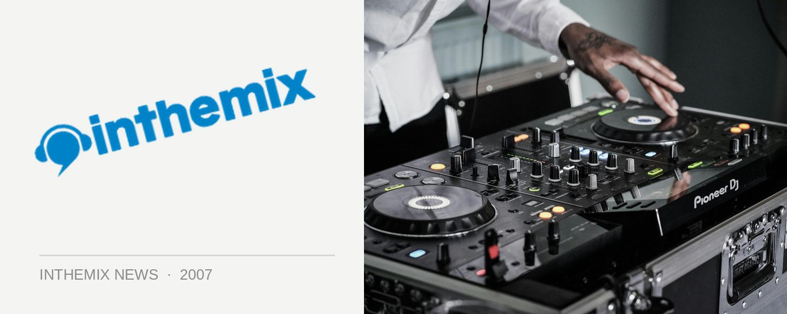

Sweetchilli goes weekly!
Sweetchilli has to be one of Sydney’s most loved and consistent club events, delivering regular doses of tech, progressive and all shades of underground house for over eight years now. Now its loyal group of followers will be able to show their love on a weekly basis!
The new Sweetchilli event will launch at The Civic Hotel on Friday 28th of September, and will continue weekly every Friday night after that. The organisers will be delivering a fresh take on their popular existing events, and the plan is to open up the city’s clubbers to the underground and create a space where open-minded individuals from an array of different scenes can come together week after week.
Initially, there will be four concepts that will rotate monthly or thereabouts, with more to come later on. There will be the classic Sweetchilli that we you know and love; Sweetchilli RavE that will evoke the glow sticks, the PLUR and the warehouse vibe that we remember from the early days of dance music; Thug Nights for a fix of sexy, futuristic underground tunes and finally, Sweetchilli LIVE which will deliver live electronic acts, producers and bands.
The launch party will be a classic Sweetchilli event with Daniel Crocetti, Carlos Zarate, Robbie Lowe and Mark Murphy. Get on down to The Civic on Friday September 28th to check it out!